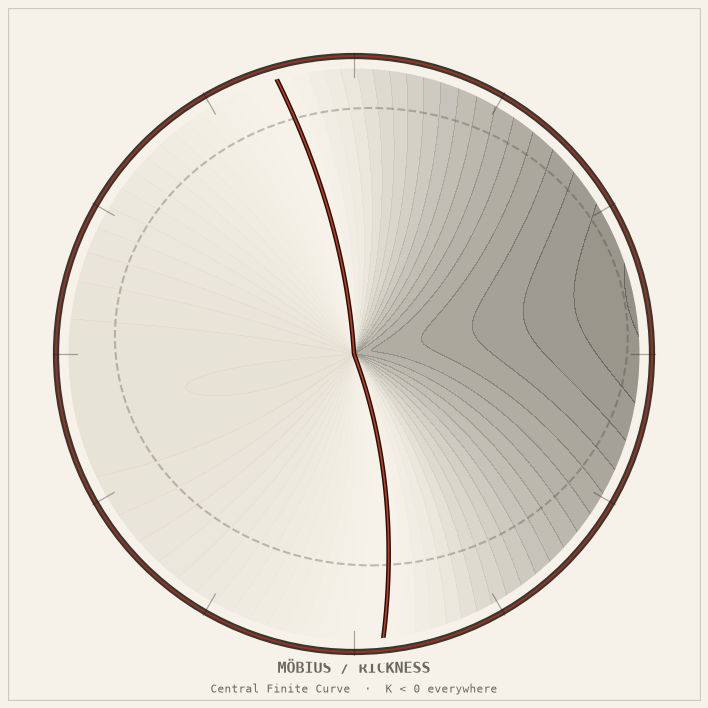

Möbius Rickness zero-set model
The Central Finite Curve as a real zero set — a Rick & Morty conceit turned into honest differential geometry, with Gaussian curvature K < 0 strictly everywhere.

The Möbius Rickness interpretation
In Rick and Morty, the Central Finite Curve is a barrier that isolates universes where a Rick is the smartest being. The show presents it as an infinite-but-bounded arc through the multiverse. It also implies a loop or ring.
How the Python zero-set model works
The project represents the curve as the zero set of a scalar Rickness field on a Möbius strip, then traces it with marching squares and scan-line bisection. A Möbius strip is a ruled surface (made entirely of straight lines) with strictly negative Gaussian curvature K < 0 at every point — a saddle, not a flat plane. The zero set of a scalar “Rickness” field on that strip is a closed curve that inherits the strip’s non-orientability. It is genuinely infinite in topological content (the curve wraps around twice before closing) while remaining bounded in space.
The package provides two independent readings of the same geometry: (1) the pure-core zero-set tracing that runs on stdlib only, and (2) an SCMS (Subspace Constrained Mean Shift) height-ridge, which requires numpy. Both are verified to agree on the strip’s curvature signature.
The R⁸ Central Finite Curve simulation provides a separate computational interpretation based on a constrained point cloud and a portal-gun walk.
The mathematics
Reading 1 — Zero set R⁻¹(0) on a Möbius strip
The Möbius strip is parametrised as a ruled surface with a scalar Rickness field:
Position:
x(u,v) = cos(u) · (1 + v · cos(u/2))
y(u,v) = sin(u) · (1 + v · cos(u/2))
z(u,v) = v · sin(u/2)
u ∈ [0, 2π), v ∈ [-0.5, 0.5]
Rickness field:
R(u,v) = cos(u) + 0.4·v·cos(u/2) + 0.2·sin(u)
Zero set (the Central Finite Curve):
CFC = { (u,v) : R(u,v) = 0 }
Traced by marching-squares + scan-line bisection.
Residual |R| < 1.6 × 10⁻¹⁰ on all traced points.
Gaussian curvature K < 0 everywhere
The Möbius strip is a ruled surface. For any ruled surface that is not developable (not flat), the Gaussian curvature is strictly negative at every point. Three independent computation paths all agree:
K = -1 / (4E²) where E² = |∂r/∂v|² (first fundamental form coefficient) Method 1: Analytic formula via shape operator Method 2: Finite-difference numerical approximation Method 3: Complex-step numerical differentiation All three paths agree to ~7 × 10⁻⁹ across the parameter domain. K < 0 strictly everywhere — the strip is a saddle at every point.
Reading 2 — SCMS height-ridge (optional numpy)
The SCMS (Subspace Constrained Mean Shift / Eberly) algorithm finds the ridge of the Rickness field — the locus of local maxima in the directions transverse to the ridge. This is a different object from the zero set.
SCMS ridge: locus where ∇R is parallel to the ridge tangent → residual ~3 × 10⁻⁹ after 29 iterations, 500 points Ridge lies OFF the zero wall: |R| on ridge ∈ [0.60, 1.15] (not zero) The zero set and the ridge are two geometrically distinct curves on the same surface — both are valid "Central Finite Curves" under different readings of the show's conceit.
Key distinction: The show never specifies whether the CFC is the zero set (where Rick’s supremacy transitions from true to false) or the ridge (where Rick’s supremacy is locally maximal). Both readings are geometrically honest; they give different curves on the same Möbius strip.
How it works
The package is a pure Python src-layout library. The core module
(mobius_rickness.core) depends only on the Python standard library.
The optional mobius_rickness.ridge module additionally requires numpy for the SCMS
algorithm.
- Curvature module: computes K by all three methods independently, then cross-checks them. The package raises an assertion error if any two methods disagree by more than 1e-6.
- Zero-set tracer: uses marching squares to find sign changes in R, then refines each crossing with bisection until |R| < 1e-9.
- SCMS ridge: implements the Eberly mean-shift iteration on the Rickness field, converging to the ridge locus in 20–30 iterations.
- Tests: 70 pure-stdlib tests verify curvature, zero-set residual, and the non-orientability of the strip. ~109 full tests with numpy add ridge convergence checks.
Figures & animations
Six rendered artifacts covering the zero set, Rickness heatmap, SCMS ridge, and three animations. The four-panel animation is the headline render.
Four panels — composite animation
Strip with zero-set curve; Rickness heatmap; SCMS ridge; convergence plot — all four views animated side by side.
Zero set, rotating
The Möbius strip rotating in 3-D with the zero-set curve highlighted. Note the saddle geometry — K < 0 everywhere, no flat patches.
SCMS convergence animation
The ridge-finding iteration converging: initial seed points drifting toward the Rickness ridge over 29 iterations.

Zero-set curve on the strip
The Central Finite Curve as R⁻¹(0) — a closed curve that wraps around the strip twice before closing, due to non-orientability.

Rickness field heatmap
R(u, v) on the parameter domain. The zero contour (the CFC) runs across the middle. The SCMS ridge sits at the local maximum band.

SCMS ridge
The Eberly height-ridge of R — the locus of transverse maxima. This is Reading 2, distinct from the zero set above.
Honest caveats: The Möbius strip is a genuine ruled surface with K < 0 everywhere — the geometry is honest, the mythology is not. The Rickness field is an ad-hoc scalar chosen to produce a plausible zero set; it is not derived from any physical theory. The SCMS ridge and the zero set are geometrically unrelated curves that happen to live on the same strip. The show’s “Central Finite Curve” is a conceit; this package makes that conceit as mathematically precise as possible without inventing physics.
Run it
# Clone and enter the monorepo git clone https://github.com/caelum0x/awesome-mad-projects.git cd awesome-mad-projects/infinity-lab # Install core (stdlib only) pip install -e packages/mobius_rickness # Run the zero-set tracer and print curvature results python -m mobius_rickness # Run the 70 pure-stdlib tests python -m pytest packages/mobius_rickness/tests -v # Run full test suite including SCMS ridge (requires numpy) pip install numpy matplotlib python -m pytest packages/mobius_rickness/tests -v